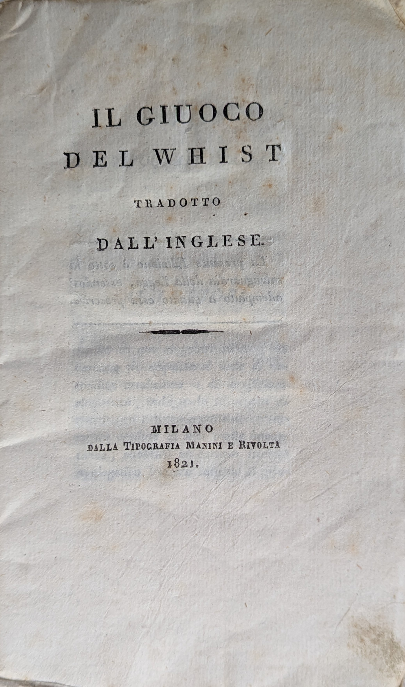

A Descriptive Bibliography of Edmond Hoyle
Copyright © 2014-26 by David Levy
(page updated 2023-11-16)User Guide
Whist.It.1.1
Il Giuoco del Whist, dalla tipografia Manini e Rivolta, first edition, first issue, 1821.
 |
Title: | IL GIUOCO | DEL WHIST | TRADOTTO | DALL'INGLESE. | [short rule] | MILANO | DALLA TIPOGRAFIA MANINI E RIVOLTA | 1821. |
| Collation: | 12o: 1–412 [$1,5 signed; signing $5 as '$*'; signing 45 as *]; 48 leaves, pp. [1–7] 8–96 |
| Contents: | Signature (Page) Reference | Contents | Signature (Page) Reference | Running Titles |
| 11r (1) | title | |||
| 11v (2) | ‘[rule] | La presente Edizione è sotto la | salvaguardia della Legge, essendosi | addempiuto a quanto essa prescrive. | [rule]’ | |||
| 12r–13v (3–6) | ‘AVVISO | DEI TIPOGRAFI ITALIANI | AI LETTORI | [...]’ | |||
| 14r–15r (7–9) | ‘[oxford rule] | IL GIUOCO | DEL WHIST. | [...]’ | |||
| 15r–16r (9–11) | ‘[...] | 24 brevi regole pei principianti. | [...]’ | |||
| 16r (11) | ‘[...] | Maniera di contare al Whist. | [...]’ | |||
| 16r–43r (11–77) | Mr. Hoyle's Game of Whist | |||
| 43r–412v (77–96) | ‘[...] | Precetti per il Whist del sig. Paine. | [...]’ |
| Publisher: | Manini e Rivolta |
| References: | Lensi 61 |
| Copies Seen: | Levy [1819] |
| Notes: | This is the first appearance of Hoyle's Whist in Italian. The translation is from the section on whist in Jones.8 (1808), or perhaps an earlier edtion as the translation omits the additional material introduced in Jones 9 (1814). Hoyle is not identified as the author. The book was reissued as Whist.It.1.2 with an almanac for the year 1822. |